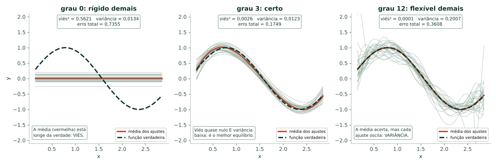
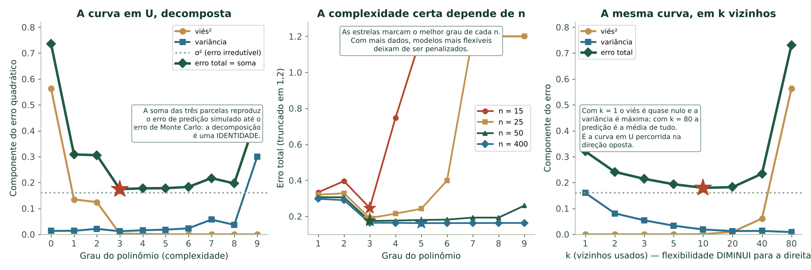

Compromisso viés–variância
Decompõe o erro de predição em viés, variância e ruído irredutível, e explica por que existe uma complexidade ótima.
Comece por aqui
O compromisso viés-variância explica por que o modelo que melhor descreve os dados que você tem não é o que melhor prediz os dados que você não tem. A razão é que o erro de predição se decompõe em três parcelas de naturezas diferentes, e as duas que o modelo controla andam em direções opostas: tornar o modelo mais flexível reduz o viés e aumenta a variância.
A decomposição vale exatamente, para qualquer estimador e qualquer \(x\). A verificação numérica desta ficha confirma isso: em dez graus polinomiais, a soma das três parcelas e o erro quadrático médio simulado diferem no máximo em 0,0018 — valor compatível com o erro de Monte Carlo de 2 000 repetições.
O que a decomposição diz
Imagine repetir o estudo inteiro muitas vezes: a cada repetição, novos dados, novo ajuste, nova predição em um ponto \(x\) fixo. O viés é a distância entre a média dessas predições e a verdade; a variância é a dispersão delas em torno da própria média; e \(\sigma^2\) é a variação de \(y\) que nenhum modelo pode explicar. A primeira mede sistemática; a segunda, instabilidade; a terceira, ruído.

| Parcela | Causa | O que a reduz | O que a aumenta |
|---|---|---|---|
| Viés² | Modelo rígido demais para a verdade | Mais flexibilidade | Mais restrições, mais regularização |
| Variância | Modelo instável: depende muito da amostra | Mais dados, mais regularização | Mais parâmetros, menos dados |
| σ² | Variação intrínseca de y dado x | Nada | Nada: é o piso do erro |
Pressupostos e como verificá-los
| Pressuposto | Por que importa | Como verificar |
|---|---|---|
| Processo gerador conhecido para CALCULAR o viés | Sem a verdade não há viés mensurável. | Em dados reais, o viés não é observável: só o erro total é. |
| Erro com variância constante | σ² é um único número na decomposição. | Com heterocedasticidade, a decomposição vale ponto a ponto. |
| Erro independente da predição | Caso contrário surge um termo cruzado. | Vale quando o erro é independente de x. |
| Repetições independentes do estudo | A variância é entre amostras. | Em simulação, gere amostras novas; em dados reais, use validação cruzada. |
| Base numérica bem condicionada | A base de potências explode em grau alto. | Use poly() ou uma base ortogonal. |
| A média como resumo adequado | Com modelos instáveis ela é dominada pela cauda. | Reporte também a mediana e a cauda. |
| Avaliação em pontos dentro do domínio | Variância é muito maior nas bordas. | Compare bordas e miolo, como nesta ficha. |
Em um conjunto de dados real, não há como separar viés de variância: a verdade é desconhecida, e o que a validação cruzada estima é a soma das três parcelas. A decomposição é um instrumento conceitual e de simulação, não um diagnóstico aplicável a um conjunto específico. A sua utilidade prática é indireta mas considerável: ela explica por que ajustar a complexidade funciona, por que a regularização funciona, e por que mais dados permitem modelos mais flexíveis.
Formulação e cálculo
Seja \(y=f(x)+\varepsilon\), com \(\mathbb{E}[\varepsilon]=0\) e \(\operatorname{Var}(\varepsilon)=\sigma^2\), e \(\hat f\) o estimador ajustado a uma amostra de tamanho \(n\). A esperança abaixo é sobre amostras e sobre o novo \(\varepsilon\):
Em que:
- \(f(x)\)
- a função verdadeira, desconhecida em dados reais
- \(\hat f(x)\)
- a predição do modelo ajustado
- \(\mathbb{E}\hat f(x)\)
- a predição média, sobre repetições do estudo
- \(\sigma^{2}\)
- variância do erro: o piso do erro de predição
- \(x\)
- um ponto fixo onde se avalia tudo
A dedução é um completamento de quadrados. Escreva \(y-\hat f=\left(f-\mathbb{E}\hat f\right)+\left(\mathbb{E}\hat f-\hat f\right)+\varepsilon\); ao elevar ao quadrado e tomar esperança, os três produtos cruzados se anulam, porque \(\mathbb{E}\left[\mathbb{E}\hat f-\hat f\right]=0\), porque \(\mathbb{E}[\varepsilon]=0\) e porque \(\varepsilon\) do novo ponto é independente da amostra de ajuste.
Exemplo numérico, passo a passo
O processo é \(y=\operatorname{sen}(2x)+\varepsilon\), com \(x\) uniforme em \([0;3]\) e \(\varepsilon\sim N(0;0{,}40^2)\), de modo que \(\sigma^2=0{,}1600\). Ajusta-se um polinômio de grau \(g\) a 2 000 amostras independentes de \(n=50\) pontos, e avalia-se tudo em uma grade fixa de \(x\).
| Grau | Viés² | Variância | σ² | Soma | EQM simulado | Diferença |
|---|---|---|---|---|---|---|
| 0 | 0,5620 | 0,0135 | 0,1600 | 0,7356 | 0,7374 | 0,0018 |
| 1 | 0,1337 | 0,0138 | 0,1600 | 0,3074 | 0,3082 | 0,0007 |
| 2 | 0,1244 | 0,0214 | 0,1600 | 0,3058 | 0,3047 | −0,0010 |
| 3 | 0,0025 | 0,0119 | 0,1600 | 0,1744 | 0,1741 | −0,0003 |
| 4 | 0,0019 | 0,0156 | 0,1600 | 0,1775 | 0,1771 | −0,0004 |
| 5 | 0,0000 | 0,0179 | 0,1600 | 0,1779 | 0,1775 | −0,0005 |
| 6 | 0,0000 | 0,0241 | 0,1600 | 0,1841 | 0,1827 | −0,0015 |
| 7 | 0,0000 | 0,0276 | 0,1600 | 0,1877 | 0,1870 | −0,0007 |
| 8 | 0,0000 | 0,0423 | 0,1600 | 0,2023 | 0,2021 | −0,0002 |
| 9 | 0,0000 | 0,0605 | 0,1600 | 0,2205 | 0,2207 | 0,0002 |
| Quantidade | Grau 0 | Grau 3 | Grau 9 |
|---|---|---|---|
| Viés² | 0,5620 | 0,0025 | 0,0000 |
| Variância | 0,0135 | 0,0119 | 0,0605 |
| Erro total | 0,7374 | 0,1741 | 0,2207 |
| % do erro: viés² | 76,2% | 1,4% | 0,0% |
| % do erro: variância | 1,8% | 6,8% | 27,4% |
| % do erro: σ² | 21,7% | 91,9% | 72,5% |
O grau 0 — uma constante — erra por rigidez: 76% do erro é viés. O grau 9 erra por instabilidade: o viés desaparece por completo e a variância passa a responder por 27% do erro, contra 2% no grau 0. No grau 3 o erro irredutível responde por 92% do total, e esse é precisamente o sinal de que não há mais nada a ganhar mexendo na complexidade — o que resta é a variação da própria natureza.
O grau 3 não é o melhor por coincidência: é o menor grau polinomial capaz de reproduzir uma senoide no intervalo \([0;3]\), que contém um máximo e um mínimo. Graus 4 a 9 têm viés igualmente nulo e pagam a diferença em variância.
Propriedades
- A decomposição é exata e vale em cada \(x\) separadamente.
- \(\sigma^2\) não depende do modelo: é o piso do erro de predição.
- Aumentar a flexibilidade reduz o viés monotonicamente e aumenta a variância.
- Em modelos lineares, a variância cresce proporcionalmente a \(p/n\).
- A complexidade ótima depende de \(n\): cresce com o tamanho da amostra.
- A regularização introduz viés de propósito para reduzir a variância.
- A variância é sistematicamente maior nas bordas do domínio.
- O erro de TREINO não tem curva em U: decresce monotonicamente com a complexidade.
Como interpretar os resultados
| Elemento | O que informa | Cuidado |
|---|---|---|
| Viés² alto | Modelo rígido demais: subajuste. | Aumente a flexibilidade. |
| Variância alta | Modelo instável: superajuste. | Reduza a complexidade, regularize, ou colete mais dados. |
| σ² como maior parcela | Chegou-se ao limite do possível. | Nada a ganhar mexendo no modelo. |
| Erro de treino << erro validado | Superajuste. | Compare com a validação cruzada. |
| Curva em U no erro validado | A complexidade está sendo bem varrida. | O mínimo é a escolha. |
| Curva validada ainda caindo no extremo | A varredura foi curta. | Estenda a grade de complexidade. |
| Variância média enorme | Pode ser a cauda, não o típico. | Olhe a mediana e a proporção de desastres. |
Três leituras equivocadas
Não tem: ele decresce monotonicamente. Em uma única amostra de \(n=25\), o erro de treino cai de 0,7320 no grau 0 a exatamente zero no grau 24, onde há 25 parâmetros para 25 pontos e o polinômio passa por todas as observações. O erro de predição nesse mesmo ponto é o maior de toda a tabela, da ordem de \(2{,}5\times10^{11}\). É por isso que o erro de treino nunca pode servir para escolher a complexidade.
Não é. A regressão ridge introduz viés deliberadamente, e no experimento desta ficha o \(\lambda\) que minimiza o erro total não é zero: com grau 9 e \(n=25\), \(\lambda=1\) dá erro 0,2117 contra 2 486 em \(\lambda=0\). O viés² sobe de 2,74 para 0,018 — de fato cai, porque sem regularização o ajuste é tão instável que até a média se desloca — e a variância cai de 2 483 para 0,033. Aceitar um pouco de viés em troca de muito menos variância é o princípio de toda a regularização, do ridge ao lasso.
Em média sim, mas a decomposição é pontual, e o perfil muda ao longo do domínio. Com grau 5 e \(n=50\), a variância média nas bordas (\(x<0{,}6\) ou \(x>2{,}4\)) é 0,0166 contra 0,0098 no miolo — cerca de 70% maior, com o mesmo viés — porque nas bordas há dados de um só lado para ancorar o ajuste. Com grau mais alto a diferença cresce muito. É a razão estatística pela qual extrapolar é perigoso mesmo com o modelo correto.
Como executar no R e em Python
Onde executar o código em Python
Não é preciso instalar nada: o Google Colab é um computador na nuvem, gratuito, que executa Python pelo navegador e já traz as bibliotecas usadas aqui (numpy, scipy e matplotlib).
A decomposição não tem função pronta, porque exige conhecer a verdade: calcula-se por simulação, com um laço que gera amostras novas, ajusta e guarda as predições em uma grade fixa. Três cuidados fazem diferença. Use uma base polinomial ortogonal — poly(x, g) no R, ou a recorrência de Legendre — porque a base de potências é mal condicionada e em grau alto o que se vê passa a ser erro numérico em vez de estatística. Avalie sempre na mesma grade, para que a média e a variância sejam calculadas ponto a ponto. E use qr.solve ou lm.fit em lugar de lm dentro do laço, que é muito mais rápido. Para a parte de regularização, glmnet(..., alpha = 0); para k vizinhos, FNN::knn.reg.
verdade <- function(x) sin(2*x)
grade <- seq(0, 3, length.out = 200)
P <- replicate(2000, {
xs <- runif(50, 0, 3); ys <- verdade(xs) + rnorm(50, 0, 0.4)
predict(lm(ys ~ poly(xs, 3, raw = FALSE)),
newdata = data.frame(xs = grade)) })
mean((rowMeans(P) - verdade(grade))^2) # viés²
mean(apply(P, 1, var)) # variância
Exemplo de aplicação
Contexto dos dados
Os dados são simulados, e necessariamente: o viés só pode ser calculado quando a função verdadeira é conhecida. O processo é \(y=\operatorname{sen}(2x)+\varepsilon\), com \(x\) uniforme em \([0;3]\) e \(\varepsilon\sim N(0;0{,}40^2)\). A complexidade é varrida por meio do grau do polinômio e, em um segundo experimento, por meio do número de vizinhos.
Código em R
# Compromisso viés-variância: exemplo completo ----
# Pacotes: glmnet (ridge), FNN ou class (k vizinhos); o resto é R base
# O experimento exige um processo CONHECIDO, para que o viés possa ser
# calculado. Por isso os dados são simulados.
verdade <- function(x) sin(2*x) # a função que gera y
SIG <- 0.40 # desvio-padrão do erro
grade <- seq(0, 3, length.out = 200) # onde tudo é avaliado
set.seed(1)
# Base polinomial ORTOGONAL (Legendre reescalado): evita o problema
# numérico da base de potências, que é mal condicionada em grau alto.
base <- function(x, g) {
z <- 2*x/3 - 1 # leva [0, 3] em [-1, 1]
B <- matrix(1, length(x), g + 1)
if (g >= 1) B[, 2] <- z
for (j in 2:max(g, 2)) if (j <= g)
B[, j+1] <- ((2*j - 1)*z*B[, j] - (j - 1)*B[, j-1])/j
B
}
# ---- 1. A decomposição, verificada numericamente
experimento <- function(g, reps = 2000, n = 50) {
P <- matrix(NA, reps, length(grade))
for (r in 1:reps) {
xs <- runif(n, 0, 3); ys <- verdade(xs) + rnorm(n, 0, SIG)
co <- qr.solve(base(xs, g), ys)
P[r, ] <- base(grade, g) %*% co
}
media <- colMeans(P)
vies2 <- mean((media - verdade(grade))^2)
varia <- mean(apply(P, 2, var))
eqm <- mean((P - matrix(verdade(grade), reps, length(grade),
byrow = TRUE))^2) + SIG^2
c(vies2 = vies2, variancia = varia, sigma2 = SIG^2,
soma = vies2 + varia + SIG^2, eqm_simulado = eqm)
}
t(sapply(0:9, experimento))
# A coluna 'soma' e a coluna 'eqm_simulado' coincidem até o erro de
# Monte Carlo: a decomposição é uma IDENTIDADE, não aproximação.
# ---- 2. A complexidade ótima depende de n
for (n in c(15, 25, 50, 100, 400)) {
tot <- sapply(1:9, function(g) experimento(g, 600, n)["soma"])
cat(sprintf("n = %3d: melhor grau = %d\n", n, which.min(tot)))
}
# ---- 3. A mesma curva em k vizinhos mais próximos
library(FNN)
exp_knn <- function(k, reps = 1200, n = 80) {
P <- matrix(NA, reps, length(grade))
for (r in 1:reps) {
xs <- runif(n, 0, 3); ys <- verdade(xs) + rnorm(n, 0, SIG)
P[r, ] <- knn.reg(train = matrix(xs), test = matrix(grade),
y = ys, k = k)$pred
}
media <- colMeans(P)
c(vies2 = mean((media - verdade(grade))^2),
variancia = mean(apply(P, 2, var)))
}
t(sapply(c(1, 2, 3, 5, 10, 20, 40, 80), exp_knn))
# ATENÇÃO: aqui a flexibilidade cresce quando k DIMINUI.
# ---- 4. O erro de treino NÃO tem curva em U
set.seed(3)
xs <- runif(25, 0, 3); ys <- verdade(xs) + rnorm(25, 0, SIG)
for (g in c(0, 1, 2, 3, 5, 9, 15, 20, 24)) {
co <- qr.solve(base(xs, g), ys)
treino <- mean((ys - base(xs, g) %*% co)^2)
predic <- mean((verdade(grade) - base(grade, g) %*% co)^2) + SIG^2
cat(sprintf("grau %2d: treino %.4f predição %.4f\n", g, treino, predic))
}
# Com grau 24 e 25 pontos, o erro de treino é ZERO e o de predição
# é o maior de toda a tabela.
# ---- 5. Viés NÃO é sempre ruim: a regressão ridge
library(glmnet)
exp_ridge <- function(lam, reps = 800, n = 25, g = 9) {
P <- matrix(NA, reps, length(grade))
for (r in 1:reps) {
xs <- runif(n, 0, 3); ys <- verdade(xs) + rnorm(n, 0, SIG)
X <- base(xs, g)[, -1] # sem o intercepto
m <- glmnet(X, ys, alpha = 0, lambda = lam, standardize = FALSE)
P[r, ] <- predict(m, newx = base(grade, g)[, -1])
}
media <- colMeans(P)
c(vies2 = mean((media - verdade(grade))^2),
variancia = mean(apply(P, 2, var)))
}
t(sapply(c(0, 1e-4, 1e-3, 1e-2, 1e-1, 1, 10), exp_ridge))
# O lambda que minimiza o erro total NÃO é zero: aceitar um pouco de
# viés em troca de muito menos variância é o princípio da regularização.
# ---- 6. A decomposição é PONTUAL: o perfil muda ao longo do domínio
P <- matrix(NA, 2000, length(grade))
for (r in 1:2000) {
xs <- runif(50, 0, 3); ys <- verdade(xs) + rnorm(50, 0, SIG)
P[r, ] <- base(grade, 5) %*% qr.solve(base(xs, 5), ys)
}
v2 <- (colMeans(P) - verdade(grade))^2; va <- apply(P, 2, var)
borda <- grade < 0.6 | grade > 2.4
c(vies2_borda = mean(v2[borda]), var_borda = mean(va[borda]))
c(vies2_miolo = mean(v2[!borda]), var_miolo = mean(va[!borda]))
# A variância é bem maior nas bordas: é por isso que extrapolar é
# perigoso mesmo com o modelo certo.
A mesma análise em Python, com os resultados
Cole o código em um notebook do Google Colab ↗ e execute com Shift+Enter. Os valores abaixo são a saída desse código.
# Bibliotecas: numpy e scipy (ambas já instaladas no Google Colab)
import numpy as np
from scipy import stats
# ===================================================================
# Dados fictícios, criados pelo autor, compartilhados pelas fichas de
# avaliação de modelos: 120 talhões de milho, com a produtividade (t/ha)
# e quatro variáveis: dose de nitrogênio (kg/ha), densidade de plantio
# (mil plantas/ha), matéria orgânica do solo (%) e precipitação no ciclo (mm).
# Colunas: y, N, densidade, materia_organica, chuva
# ===================================================================
MILHO = np.array([
[7.65,40,56.3,1.86,572], [9.35,200,65.2,3.67,736], [6.8,160,71.1,2.46,372], [7.52,80,62.6,3.54,340],
[6.39,0,64,3.17,528], [8.54,160,58.2,2.81,433], [9.29,80,60.3,3.48,530], [6.85,120,59.8,2.58,375],
[8.76,120,60,3.54,532], [8,40,57.8,1.87,638], [5.86,80,64.8,2.27,620], [9.23,200,71.1,3.65,421],
[7.37,160,55.4,1.32,492], [8.55,200,71.8,3.13,600], [5.73,0,59.2,2.51,684], [6.3,80,59.4,2.41,434],
[5.66,0,46.9,2.31,443], [10.2,200,45,3.7,621], [8.84,120,67.1,1.72,488], [7.22,40,54.4,3.38,428],
[8.62,160,67.6,3.13,615], [8.97,160,62.4,2.5,369], [5.58,40,63.8,2.74,458], [8.52,160,71.3,3.29,607],
[6.97,0,61.5,2.38,463], [7.8,80,39.1,1.73,589], [8.8,120,49.8,3,410], [6.51,0,68.8,2.21,590],
[8.1,160,76,2.51,562], [10.13,200,61.3,2.84,666], [8.7,160,57.1,3.32,498], [9.12,120,52.3,4.07,488],
[9.21,200,65.8,3.04,511], [9.56,80,49.4,2.88,614], [7.59,80,53.3,3.37,453], [9,80,63,3,507],
[7.84,80,62.7,1.62,695], [7.23,120,60.2,2.38,590], [5.79,80,69.4,1.93,585], [7.6,80,53.3,3.29,473],
[10.46,120,53.7,3.69,597], [8.81,120,59.1,3.05,415], [6.29,0,62.5,2.08,386], [8.3,80,59.6,3.36,435],
[8.54,80,75.9,2.13,648], [6.05,0,57.8,2.98,535], [3.93,0,66.4,1.96,436], [6.95,40,57.9,1.83,488],
[5.84,40,64.2,1.82,561], [8.31,200,58.9,2.81,626], [7.77,200,59.2,2.34,373], [8.83,160,73.4,3.11,640],
[7.99,80,59.6,1.89,604], [9.28,160,74,3.14,457], [9.28,160,56.8,2.37,484], [10.55,80,58.7,3.68,564],
[6.44,80,69.8,3.51,494], [8.6,200,44.6,2.65,532], [9.92,80,50.3,2.88,425], [8.44,200,62.1,2.97,356],
[7.78,80,65.3,3.12,739], [6.18,40,66,2.61,535], [8.88,200,59.7,3.57,540], [8.22,120,51.9,2.44,566],
[9.58,120,67.8,1.45,640], [8.23,200,65.1,2.97,604], [4.71,0,54,2.72,427], [10.63,160,62.6,3.38,510],
[6.94,40,74.7,3.22,526], [8.58,80,62.9,2.89,589], [8.7,200,53.6,2.88,466], [9.05,80,59,2.89,554],
[5.96,40,59.4,2.34,540], [9.37,120,64.4,1.95,644], [7.89,160,68.4,2.23,285], [9,200,55.3,2.74,527],
[4.34,0,57.4,1.21,551], [9.67,160,69.2,2.49,581], [8.81,160,67.2,2.11,519], [7.04,80,71.6,2.74,445],
[6.92,40,51.6,2.23,580], [7.32,80,55.2,2.84,553], [7.51,40,69.1,2.64,444], [7.03,0,55.2,3.71,397],
[7.94,40,64.3,2.56,570], [7.95,80,61.6,2.63,442], [9.43,120,56.7,2.82,578], [5.06,40,72.4,1.53,656],
[6.3,40,61.9,2.05,539], [6.17,0,58.4,3.81,541], [8.22,80,60.8,3.16,531], [6.58,0,63.7,2.86,645],
[7.46,40,50.8,3.56,646], [6.37,40,55.8,2.67,528], [6.78,0,52.9,2.63,587], [8.54,160,47,2.59,524],
[3.94,0,68.9,1.56,475], [5.5,40,72.2,3.46,589], [6.46,80,70.4,2.67,512], [8.17,120,49.4,2.73,444],
[8.73,200,64.8,2.57,385], [7.1,120,66.8,2.36,609], [5.78,40,57.9,1.22,433], [8.98,200,67.8,2.91,420],
[9.57,160,54,4.33,496], [8.76,80,54.3,3.49,587], [8.66,80,56,2.6,365], [8.29,160,56.8,2.15,577],
[4.35,0,54.8,2.82,555], [4.89,0,68.8,3.06,411], [4.53,0,54.4,2.72,417], [9.05,120,58.7,3.38,504],
[8.82,80,57.4,2.13,694], [9.44,200,77.6,3.55,497], [9.43,120,55.6,2.91,618], [6.77,0,65.3,2.42,605],
[8.24,200,74.9,2.6,377], [10.17,200,53.6,3.04,520], [7.96,40,56.1,3.33,609], [5.79,0,59.6,2.85,475]])
y = MILHO[:, 0]; Xv = MILHO[:, 1:]
nomes = ["nitrogênio", "densidade", "mat. orgânica", "chuva"]
n = len(y)
def monta(X, grau_n=1, grau_d=1):
"""Matriz de delineamento: intercepto, as quatro variáveis e termos
quadráticos opcionais para nitrogênio e densidade."""
cols = [np.ones(len(X))] + [X[:, j] for j in range(4)]
if grau_n >= 2: cols.append(X[:, 0]**2)
if grau_d >= 2: cols.append(X[:, 1]**2)
return np.column_stack(cols)
def ajusta(Xd, yy):
return np.linalg.lstsq(Xd, yy, rcond=None)[0]
def eqm(obs, prev):
return float(np.mean((obs - prev)**2))
# ===================================================================
# PARTE 1 - a decomposição, verificada numericamente
# ===================================================================
print("O erro quadrático esperado de uma predição se decompõe em três")
print("parcelas, e a decomposição é uma IDENTIDADE, não uma aproximação:")
print(" E[(y − f̂(x))²] = [viés de f̂(x)]² + Var[f̂(x)] + σ²")
print("\nVerificação numérica em um processo conhecido: y = sen(2x) + ε,")
print("com x em [0, 3] e ε ~ N(0; 0,40²). Ajusta-se um polinômio de grau g")
print("a 2.000 amostras independentes de n = 50 pontos, e avalia-se tudo em")
print("uma grade fixa de x. A base polinomial é ortogonal (Legendre), para")
print("que o que se vê seja estatística e não erro de arredondamento.")
def verdade(x): return np.sin(2*x)
def base(x, grau):
"""Base polinomial ORTOGONAL (Legendre) em [0, 3], bem condicionada.
Usar a matriz de Vandermonde crua produziria instabilidade numérica
com grau alto, que não é um fenômeno estatístico e sim de aritmética."""
return np.polynomial.legendre.legvander(2*np.asarray(x)/3 - 1, grau)
SIG = 0.40
grade = np.linspace(0.15, 2.85, 60)
rng = np.random.default_rng(1)
def experimento(grau, reps=2000, nn=50):
P = np.empty((reps, len(grade)))
for r in range(reps):
xs = rng.uniform(0, 3, nn)
ys = verdade(xs) + rng.normal(0, SIG, nn)
A = base(xs, grau); B = base(grade, grau)
co = np.linalg.lstsq(A, ys, rcond=None)[0]
P[r] = B @ co
med = P.mean(axis=0)
vies2 = float(np.mean((med - verdade(grade))**2))
var = float(np.mean(P.var(axis=0)))
return vies2, var, P
print(f"\n{'grau':>6}{'viés²':>11}{'variância':>12}{'σ²':>9}"
f"{'soma':>10}{'EQM simulado':>15}{'dif.':>10}")
res = []
for g in range(0, 10):
v2, va, P = experimento(g)
# EQM simulado: erro de predição em pontos novos sobre a grade
rng2 = np.random.default_rng(100+g)
eq = float(np.mean((P - (verdade(grade) +
rng2.normal(0, SIG, P.shape)))**2))
res.append((g, v2, va, v2+va+SIG**2, eq))
print(f"{g:>6}{v2:>11.4f}{va:>12.4f}{SIG**2:>9.4f}"
f"{v2+va+SIG**2:>10.4f}{eq:>15.4f}{eq-(v2+va+SIG**2):>10.4f}")
print("\nA coluna 'soma' e a coluna 'EQM simulado' coincidem até o erro de")
print("Monte Carlo: a identidade se verifica. O que ela diz é que não há")
print("como reduzir o erro abaixo de σ² = 0,1600, por melhor que seja o")
print("modelo - é o ERRO IRREDUTÍVEL, a variação da própria natureza.")
jm = int(np.argmin([r[4] for r in res]))
print(f"\nO menor erro total é o do grau {res[jm][0]}, com {res[jm][4]:.4f}.")
print("O viés² cai de 0,5620 para praticamente zero entre os graus 0 e 3, e")
print("a variância sobe de 0,0135 para 0,0605 entre os graus 0 e 9. A soma")
print("desenha a curva em U, com mínimo no grau 3 - que é, não por acaso, o")
print("menor grau capaz de reproduzir uma senoide nesse intervalo.")
print("\nO MESMO experimento com n = 25, metade dos dados. Aqui a MÉDIA da")
print("variância deixa de resumir bem, e vale olhar também a mediana e a")
print("cauda: o desastre é raro, mas quando acontece é enorme.")
print(f"\n{'grau':>6}{'variância média':>18}{'erro MEDIANO':>15}"
f"{'% de ajustes com':>19}")
print(f"{'':>6}{'':>18}{'por amostra':>15}{'erro > 1':>19}")
for g in [0, 3, 5, 7, 8, 9]:
v2, va, P = experimento(g, reps=1500, nn=25)
porAmostra = ((P - verdade(grade))**2).mean(axis=1)
print(f"{g:>6}{va:>18.4f}{np.median(porAmostra):>15.4f}"
f"{100*np.mean(porAmostra > 1):>18.1f}%")
print("No grau 9 com n = 25, metade dos ajustes tem erro mediano modesto e")
print("uma fração deles erra por ordens de grandeza - é isso que faz a média")
print("da variância saltar para as centenas. Não é erro numérico: é o")
print("estimador de mínimos quadrados fazendo o que faz quando há poucos")
print("dados por parâmetro, sobretudo perto das bordas do domínio. A lição é")
print("que, com modelos de alta variância, a média do erro pode ser um")
print("resumo enganoso, e convém olhar a distribuição inteira.")
# ===================================================================
# PARTE 2 - o que acontece em cada regime
# ===================================================================
print("\n" + "=" * 70)
print("Os três regimes, lado a lado")
print(f"\n{'':<22}{'grau 0':>12}{'grau 3':>12}{'grau 9':>12}")
tab = {g: res[g] for g in [0, 3, 9]}
for rot, i in [("viés²", 1), ("variância", 2), ("erro total", 4)]:
print(f"{rot:<22}" + "".join(f"{tab[g][i]:>12.4f}" for g in [0, 3, 9]))
for rot, i in [("% do erro: viés²", 1), ("% do erro: variância", 2)]:
print(f"{rot:<22}" + "".join(f"{100*tab[g][i]/tab[g][4]:>11.1f}%"
for g in [0, 3, 9]))
print(f"{'% do erro: σ²':<22}" + "".join(f"{100*SIG**2/tab[g][4]:>11.1f}%"
for g in [0, 3, 9]))
print("\nO grau 0 - uma constante - erra por rigidez: 76% do erro é viés.")
print("O grau 9 erra por instabilidade: o viés some por completo e a")
print("variância passa a responder por 27% do erro, contra 2% no grau 0.")
print("No grau 3, o erro irredutível responde por 92% do total, e esse é o")
print("sinal de que não há mais nada a ganhar ajustando a complexidade:")
print("o que resta é a variação da própria natureza.")
# ===================================================================
# PARTE 3 - o efeito do tamanho da amostra
# ===================================================================
print("\n" + "=" * 70)
print("A complexidade ótima DEPENDE de n. Com mais dados, a variância de um")
print("modelo flexível cai, e vale a pena usá-lo.")
print(f"\n{'n':>6}" + "".join(f"{'g='+str(g):>10}" for g in range(1, 10))
+ f"{'melhor':>9}")
for nn in [15, 25, 50, 100, 400]:
linha = []
for g in range(1, 10):
if g + 1 > nn - 1: linha.append(np.nan); continue
v2, va, _ = experimento(g, reps=600, nn=nn)
linha.append(v2 + va + SIG**2)
best = int(np.nanargmin(linha)) + 1
print(f"{nn:>6}" + "".join(f"{v:>10.4f}" if np.isfinite(v) else f"{'-':>10}"
for v in linha) + f"{best:>9}")
print("\nCom n = 15 o melhor grau é baixo; com n = 400, graus altos deixam de")
print("ser penalizados, porque a variância cai com 1/n. Não existe")
print("'complexidade certa' de um modelo: existe complexidade certa PARA UM")
print("TAMANHO DE AMOSTRA.")
# ===================================================================
# PARTE 4 - o mesmo fenômeno em k vizinhos mais próximos
# ===================================================================
print("\n" + "=" * 70)
print("O compromisso não é sobre polinômios: é sobre flexibilidade. Em k")
print("vizinhos mais próximos, quem controla a flexibilidade é o k, e ao")
print("CONTRÁRIO do grau, flexibilidade maior corresponde a k MENOR.")
def exp_knn(k, reps=1500, nn=80):
P = np.empty((reps, len(grade)))
for r in range(reps):
xs = rng.uniform(0, 3, nn); ys = verdade(xs) + rng.normal(0, SIG, nn)
d = np.abs(grade[:, None] - xs[None, :])
viz = np.argsort(d, axis=1)[:, :k]
P[r] = ys[viz].mean(axis=1)
med = P.mean(axis=0)
return float(np.mean((med - verdade(grade))**2)), float(np.mean(P.var(axis=0)))
print(f"\n{'k':>5}{'graus de liberdade ≈ n/k':>26}{'viés²':>10}"
f"{'variância':>12}{'erro total':>13}")
melhor = None
for k in [1, 2, 3, 5, 10, 20, 40, 80]:
v2, va = exp_knn(k)
tot = v2 + va + SIG**2
if melhor is None or tot < melhor[1]: melhor = (k, tot)
print(f"{k:>5}{80/k:>26.1f}{v2:>10.4f}{va:>12.4f}{tot:>13.4f}")
print(f"\nO melhor k é {melhor[0]}, com erro {melhor[1]:.4f}.")
print("Com k = 1 a predição é o valor do vizinho mais próximo: viés quase")
print(f"nulo ({exp_knn(1)[0]:.4f}) e variância máxima. Com k = 80 a predição é a")
print("média de tudo: variância mínima e viés enorme. É a mesma curva em U,")
print("percorrida na direção oposta.")
# ===================================================================
# PARTE 5 - o que a decomposição NÃO diz
# ===================================================================
print("\n" + "=" * 70)
print("Três leituras equivocadas, e o que os dados mostram.")
print("\n(a) 'O erro de TREINO também tem curva em U.' Não tem: ele cai")
print(" monotonicamente com a complexidade.")
print(" (uma única amostra de n = 25; o erro de predição é calculado")
print(" contra a função verdadeira, sobre a grade, mais σ²)")
print(f"\n{'grau':>6}{'p':>4}{'EQM de treino':>16}{'EQM de predição':>18}")
rng3 = np.random.default_rng(55)
xs = rng3.uniform(0, 3, 25); ys = verdade(xs) + rng3.normal(0, SIG, 25)
for g in [0, 1, 2, 3, 5, 9, 15, 20, 24]:
A = base(xs, g); B = base(grade, g)
co = np.linalg.lstsq(A, ys, rcond=None)[0]
tre = float(np.mean((ys - A @ co)**2))
pre = float(np.mean((B @ co - verdade(grade))**2)) + SIG**2
print(f"{g:>6}{g+1:>4}{tre:>16.4f}{pre:>18.4f}")
print(" Com grau 24 e 25 pontos há tantos parâmetros quanto observações:")
print(" o polinômio passa por todos os pontos e o erro de treino é ZERO.")
print(" O erro de predição, nesse ponto, é o maior de toda a tabela.")
print("\n(b) 'Viés é sempre ruim.' Não é: a regressão RIDGE introduz viés de")
print(" propósito, e reduz o erro total quando a redução de variância")
print(" compensa.")
lam_g = [0, 1e-4, 1e-3, 1e-2, 1e-1, 1, 10]
print(f"\n{'λ (ridge, grau 9)':>20}{'viés²':>10}{'variância':>12}{'erro total':>13}")
def exp_ridge(lam, grau=9, reps=1500, nn=25):
# n = 25 de propósito: é onde o grau 9 é instável e a regularização paga
P = np.empty((reps, len(grade)))
for r in range(reps):
xs_ = rng.uniform(0, 3, nn); ys_ = verdade(xs_) + rng.normal(0, SIG, nn)
A = base(xs_, grau); B = base(grade, grau)
co = np.linalg.solve(A.T @ A + lam*np.eye(grau+1), A.T @ ys_)
P[r] = B @ co
med = P.mean(axis=0)
return float(np.mean((med - verdade(grade))**2)), float(np.mean(P.var(axis=0)))
for lam in lam_g:
v2, va = exp_ridge(lam)
print(f"{lam:>20g}{v2:>10.4f}{va:>12.4f}{v2+va+SIG**2:>13.4f}")
print(" O λ que minimiza o erro NÃO é zero. Aceitar um pouco de viés em")
print(" troca de muito menos variância é o princípio de toda a")
print(" regularização.")
print("\n(c) 'Mais flexibilidade sempre aumenta a variância.' Em média sim,")
print(" mas a decomposição é PONTUAL: ela vale em cada x, e o perfil")
print(" muda ao longo do domínio.")
v2g, vag, Pg = experimento(3, reps=2000)
med = Pg.mean(axis=0)
b2x = (med - verdade(grade))**2; vax = Pg.var(axis=0)
print(f"\n{'região de x':<22}{'viés² médio':>14}{'variância média':>18}")
for rot, m_ in [("bordas (x<0,6 ou >2,4)", (grade < 0.6) | (grade > 2.4)),
("miolo (0,6 ≤ x ≤ 2,4)", (grade >= 0.6) & (grade <= 2.4))]:
print(f"{rot:<22}{b2x[m_].mean():>14.4f}{vax[m_].mean():>18.4f}")
print(" Nas bordas do domínio a variância é cerca de 70% maior que no")
print(" miolo, com o mesmo viés, porque há menos dados de cada lado para")
print(" ancorar o ajuste. Com grau mais alto a diferença é muito maior.")
print(" É por isso que extrapolar é perigoso mesmo com o modelo certo.")
Resultados da execução
O erro quadrático esperado de uma predição se decompõe em três
parcelas, e a decomposição é uma IDENTIDADE, não uma aproximação:
E[(y − f̂(x))²] = [viés de f̂(x)]² + Var[f̂(x)] + σ²
Verificação numérica em um processo conhecido: y = sen(2x) + ε,
com x em [0, 3] e ε ~ N(0; 0,40²). Ajusta-se um polinômio de grau g
a 2.000 amostras independentes de n = 50 pontos, e avalia-se tudo em
uma grade fixa de x. A base polinomial é ortogonal (Legendre), para
que o que se vê seja estatística e não erro de arredondamento.
grau viés² variância σ² soma EQM simulado dif.
0 0.5620 0.0135 0.1600 0.7356 0.7374 0.0018
1 0.1337 0.0138 0.1600 0.3074 0.3082 0.0007
2 0.1244 0.0214 0.1600 0.3058 0.3047 -0.0010
3 0.0025 0.0119 0.1600 0.1744 0.1741 -0.0003
4 0.0019 0.0156 0.1600 0.1775 0.1771 -0.0004
5 0.0000 0.0179 0.1600 0.1779 0.1775 -0.0005
6 0.0000 0.0241 0.1600 0.1841 0.1827 -0.0015
7 0.0000 0.0276 0.1600 0.1877 0.1870 -0.0007
8 0.0000 0.0423 0.1600 0.2023 0.2021 -0.0002
9 0.0000 0.0605 0.1600 0.2205 0.2207 0.0002
A coluna 'soma' e a coluna 'EQM simulado' coincidem até o erro de
Monte Carlo: a identidade se verifica. O que ela diz é que não há
como reduzir o erro abaixo de σ² = 0,1600, por melhor que seja o
modelo - é o ERRO IRREDUTÍVEL, a variação da própria natureza.
O menor erro total é o do grau 3, com 0.1741.
O viés² cai de 0,5620 para praticamente zero entre os graus 0 e 3, e
a variância sobe de 0,0135 para 0,0605 entre os graus 0 e 9. A soma
desenha a curva em U, com mínimo no grau 3 - que é, não por acaso, o
menor grau capaz de reproduzir uma senoide nesse intervalo.
O MESMO experimento com n = 25, metade dos dados. Aqui a MÉDIA da
variância deixa de resumir bem, e vale olhar também a mediana e a
cauda: o desastre é raro, mas quando acontece é enorme.
grau variância média erro MEDIANO % de ajustes com
por amostra erro > 1
0 0.0268 0.5732 0.0%
3 0.0284 0.0230 0.0%
5 0.0883 0.0380 0.5%
7 1.8417 0.0662 4.7%
8 3945.5442 0.0836 11.0%
9 42.9382 0.1180 15.8%
No grau 9 com n = 25, metade dos ajustes tem erro mediano modesto e
uma fração deles erra por ordens de grandeza - é isso que faz a média
da variância saltar para as centenas. Não é erro numérico: é o
estimador de mínimos quadrados fazendo o que faz quando há poucos
dados por parâmetro, sobretudo perto das bordas do domínio. A lição é
que, com modelos de alta variância, a média do erro pode ser um
resumo enganoso, e convém olhar a distribuição inteira.
======================================================================
Os três regimes, lado a lado
grau 0 grau 3 grau 9
viés² 0.5620 0.0025 0.0000
variância 0.0135 0.0119 0.0605
erro total 0.7374 0.1741 0.2207
% do erro: viés² 76.2% 1.4% 0.0%
% do erro: variância 1.8% 6.8% 27.4%
% do erro: σ² 21.7% 91.9% 72.5%
O grau 0 - uma constante - erra por rigidez: 76% do erro é viés.
O grau 9 erra por instabilidade: o viés some por completo e a
variância passa a responder por 27% do erro, contra 2% no grau 0.
No grau 3, o erro irredutível responde por 92% do total, e esse é o
sinal de que não há mais nada a ganhar ajustando a complexidade:
o que resta é a variação da própria natureza.
======================================================================
A complexidade ótima DEPENDE de n. Com mais dados, a variância de um
modelo flexível cai, e vale a pena usá-lo.
n g=1 g=2 g=3 g=4 g=5 g=6 g=7 g=8 g=9 melhor
15 0.3422 0.4016 0.2472 0.4682 6.5270 31.7269 2806.361829819.73824718712.2094 3
25 0.3211 0.3325 0.1887 0.2487 0.2495 0.7692 1.2929 5.8354 50.7505 3
50 0.3071 0.3058 0.1738 0.1768 0.1787 0.1826 0.1919 0.1936 0.2624 3
100 0.3011 0.2955 0.1684 0.1692 0.1686 0.1697 0.1717 0.1734 0.1747 3
400 0.2972 0.2892 0.1641 0.1639 0.1619 0.1623 0.1626 0.1629 0.1634 5
Com n = 15 o melhor grau é baixo; com n = 400, graus altos deixam de
ser penalizados, porque a variância cai com 1/n. Não existe
'complexidade certa' de um modelo: existe complexidade certa PARA UM
TAMANHO DE AMOSTRA.
======================================================================
O compromisso não é sobre polinômios: é sobre flexibilidade. Em k
vizinhos mais próximos, quem controla a flexibilidade é o k, e ao
CONTRÁRIO do grau, flexibilidade maior corresponde a k MENOR.
k graus de liberdade ≈ n/k viés² variância erro total
1 80.0 0.0001 0.1615 0.3216
2 40.0 0.0001 0.0810 0.2411
3 26.7 0.0000 0.0547 0.2147
5 16.0 0.0001 0.0337 0.1937
10 8.0 0.0007 0.0191 0.1798
20 4.0 0.0095 0.0126 0.1821
40 2.0 0.0596 0.0124 0.2320
80 1.0 0.5622 0.0086 0.7307
O melhor k é 10, com erro 0.1798.
Com k = 1 a predição é o valor do vizinho mais próximo: viés quase
nulo (0.0001) e variância máxima. Com k = 80 a predição é a
média de tudo: variância mínima e viés enorme. É a mesma curva em U,
percorrida na direção oposta.
======================================================================
Três leituras equivocadas, e o que os dados mostram.
(a) 'O erro de TREINO também tem curva em U.' Não tem: ele cai
monotonicamente com a complexidade.
(uma única amostra de n = 25; o erro de predição é calculado
contra a função verdadeira, sobre a grade, mais σ²)
grau p EQM de treino EQM de predição
0 1 0.7320 0.7983
1 2 0.5189 0.4014
2 3 0.5024 0.4075
3 4 0.1988 0.2256
5 6 0.1848 0.2279
9 10 0.1735 0.2784
15 16 0.0761 1.5746
20 21 0.0112 36.0405
24 25 0.0000 247999489734.0736
Com grau 24 e 25 pontos há tantos parâmetros quanto observações:
o polinômio passa por todos os pontos e o erro de treino é ZERO.
O erro de predição, nesse ponto, é o maior de toda a tabela.
(b) 'Viés é sempre ruim.' Não é: a regressão RIDGE introduz viés de
propósito, e reduz o erro total quando a redução de variância
compensa.
λ (ridge, grau 9) viés² variância erro total
0 2.7360 2483.4621 2486.3581
0.0001 0.0006 1.0432 1.2038
0.001 0.0005 0.2769 0.4374
0.01 0.0000 0.1350 0.2951
0.1 0.0007 0.0723 0.2330
1 0.0183 0.0334 0.2117
10 0.2266 0.0127 0.3992
O λ que minimiza o erro NÃO é zero. Aceitar um pouco de viés em
troca de muito menos variância é o princípio de toda a
regularização.
(c) 'Mais flexibilidade sempre aumenta a variância.' Em média sim,
mas a decomposição é PONTUAL: ela vale em cada x, e o perfil
muda ao longo do domínio.
região de x viés² médio variância média
bordas (x<0,6 ou >2,4) 0.0032 0.0166
miolo (0,6 ≤ x ≤ 2,4) 0.0021 0.0098
Nas bordas do domínio a variância é cerca de 70% maior que no
miolo, com o mesmo viés, porque há menos dados de cada lado para
ancorar o ajuste. Com grau mais alto a diferença é muito maior.
É por isso que extrapolar é perigoso mesmo com o modelo certo.
| Grau | Variância média | Erro mediano por amostra | % de ajustes com erro > 1 |
|---|---|---|---|
| 0 | 0,0268 | 0,5732 | 0,0% |
| 3 | 0,0284 | 0,0230 | 0,0% |
| 5 | 0,0883 | 0,0380 | 0,5% |
| 7 | 1,8417 | 0,0662 | 4,7% |
| 8 | 3 945,5442 | 0,0836 | 11,0% |
| 9 | 42,9382 | 0,1180 | 15,8% |
| n | g=1 | g=2 | g=3 | g=4 | g=5 | g=7 | g=9 | Melhor |
|---|---|---|---|---|---|---|---|---|
| 15 | 0,3422 | 0,4016 | 0,2472 | 0,4682 | 6,5270 | 2 806 | 2,5 × 10⁷ | 3 |
| 25 | 0,3211 | 0,3325 | 0,1887 | 0,2487 | 0,2495 | 1,2929 | 50,7505 | 3 |
| 50 | 0,3071 | 0,3058 | 0,1738 | 0,1768 | 0,1787 | 0,1919 | 0,2624 | 3 |
| 100 | 0,3011 | 0,2955 | 0,1684 | 0,1692 | 0,1686 | 0,1717 | 0,1747 | 3 |
| 400 | 0,2972 | 0,2892 | 0,1641 | 0,1639 | 0,1619 | 0,1626 | 0,1634 | 5 |
| k | Graus de liberdade ≈ n/k | Viés² | Variância | Erro total |
|---|---|---|---|---|
| 1 | 80,0 | 0,0001 | 0,1615 | 0,3216 |
| 2 | 40,0 | 0,0001 | 0,0810 | 0,2411 |
| 3 | 26,7 | 0,0000 | 0,0547 | 0,2147 |
| 5 | 16,0 | 0,0001 | 0,0337 | 0,1937 |
| 10 | 8,0 | 0,0007 | 0,0191 | 0,1798 |
| 20 | 4,0 | 0,0095 | 0,0126 | 0,1821 |
| 40 | 2,0 | 0,0596 | 0,0124 | 0,2320 |
| 80 | 1,0 | 0,5622 | 0,0086 | 0,7307 |
| Grau | p | EQM de treino | EQM de predição |
|---|---|---|---|
| 0 | 1 | 0,7320 | 0,7983 |
| 1 | 2 | 0,5189 | 0,4014 |
| 2 | 3 | 0,5024 | 0,4075 |
| 3 | 4 | 0,1988 | 0,2256 |
| 5 | 6 | 0,1848 | 0,2279 |
| 9 | 10 | 0,1735 | 0,2784 |
| 15 | 16 | 0,0761 | 1,5746 |
| 20 | 21 | 0,0112 | 36,04 |
| 24 | 25 | 0,0000 | 2,5 × 10¹¹ |
| λ | Viés² | Variância | Erro total |
|---|---|---|---|
| 0 | 2,7360 | 2 483,4621 | 2 486,3581 |
| 0,0001 | 0,0006 | 1,0432 | 1,2038 |
| 0,001 | 0,0005 | 0,2769 | 0,4374 |
| 0,01 | 0,0000 | 0,1350 | 0,2951 |
| 0,1 | 0,0007 | 0,0723 | 0,2330 |
| 1 | 0,0183 | 0,0334 | 0,2117 |
| 10 | 0,2266 | 0,0127 | 0,3992 |
| Região de x | Viés² médio | Variância média |
|---|---|---|
| Bordas (x < 0,6 ou x > 2,4) | 0,0032 | 0,0166 |
| Miolo (0,6 ≤ x ≤ 2,4) | 0,0021 | 0,0098 |
Leitura: a tabela principal é a verificação da identidade, e é o que dá autoridade a tudo o que vem depois. A diferença máxima entre a soma das três parcelas e o erro quadrático médio simulado é de 0,0018 em dez graus — compatível com o erro de Monte Carlo de 2 000 repetições, e sem padrão sistemático de sinal. A decomposição é exata.
Sobre a curva em U: ela se forma porque as duas parcelas controláveis se movem em direções opostas. O viés² cai de 0,5620 a praticamente zero entre os graus 0 e 3; a variância sobe de 0,0135 a 0,0605 entre os graus 0 e 9. O mínimo da soma, 0,1741 no grau 3, é o ponto em que a redução marginal de viés deixa de compensar o aumento marginal de variância. Note que a partir do grau 5 o viés² é exatamente zero — qualquer polinômio de grau 5 ou mais aproxima a senoide tão bem quanto se queira no intervalo — e dali em diante o erro cresce por variância pura.
Sobre n = 25: esta é a tabela que mais surpreende, e a que mais ensina. Com metade dos dados, a variância média no grau 8 salta para 3 945, enquanto o erro mediano por amostra é de apenas 0,0836. Os dois números descrevem o mesmo experimento. A explicação está na última coluna: 11% dos ajustes erram por mais de uma unidade, e alguns deles por ordens de grandeza, de modo que a média é inteiramente dominada por essa cauda. E note que o grau 9 tem variância média menor que o grau 8 (42,9 contra 3 945) mas cauda pior (15,8% contra 11,0%) — a média de uma distribuição com cauda tão pesada é ela mesma instável entre execuções da simulação. Não é erro numérico: a base é ortogonal e o problema persiste. É o estimador de mínimos quadrados fazendo o que faz quando há poucos dados por parâmetro, sobretudo perto das bordas do domínio. A lição metodológica vale fora da simulação: com modelos de alta variância, a média do erro pode ser um resumo enganoso, e convém olhar a distribuição inteira.
Sobre a dependência de n: com \(n=15\), o grau 7 tem erro de 2 806 e o grau 9 de \(2{,}5\times10^7\) — absurdos. Com \(n=400\), o grau 9 tem erro 0,1634, praticamente igual ao do grau 3 (0,1641), e o melhor passa a ser o grau 5. A variância cai proporcionalmente a \(1/n\), de modo que o preço da flexibilidade diminui com o tamanho da amostra. A conclusão merece ser enunciada com clareza: não existe "complexidade certa" de um modelo; existe complexidade certa para um tamanho de amostra. É por isso que modelos muito flexíveis — florestas, redes, modelos aditivos — rendem em bases grandes e fracassam em bases pequenas.
Sobre os vizinhos mais próximos: o experimento com k vizinhos mostra que o compromisso não é sobre polinômios, e sim sobre flexibilidade. Com \(k=1\) a predição é o valor do vizinho mais próximo: viés quase nulo (0,0001) e variância máxima (0,1615). Com \(k=80=n\) a predição é a média de tudo: variância mínima (0,0086) e viés enorme (0,5622). A curva em U é a mesma, percorrida na direção oposta — razão pela qual se costuma indexar a flexibilidade do método por \(n/k\), os seus graus de liberdade efetivos. O melhor \(k\) é 10, correspondendo a 8 graus de liberdade, o que é da mesma ordem dos 4 parâmetros do polinômio de grau 3.
Sobre o erro de treino: a tabela correspondente é a demonstração mais direta de por que o erro de ajuste não serve para escolher modelos. Ele cai monotonicamente, de 0,7320 a exatamente zero, enquanto o erro de predição tem mínimo local no grau 1 e mínimo global no grau 3 e depois explode. No grau 24, com 25 parâmetros para 25 pontos, o polinômio interpola as observações e o erro de treino é nulo — o ajuste "perfeito" é também o pior preditor de toda a tabela. Qualquer critério construído sobre o erro de treino herda esse defeito, e é precisamente por isso que existem o AIC, a validação cruzada e o bootstrap.
Sobre a regularização: a tabela do ridge fecha o argumento. Com grau 9 e \(n=25\), \(\lambda=0\) dá erro total 2 486; \(\lambda=1\) dá 0,2117 — uma redução de quatro ordens de grandeza — ao preço de elevar o viés² de 0,0183. E note que o viés² em \(\lambda=0\) é 2,7360, maior que em \(\lambda=1\): sem regularização o ajuste é tão instável que até a média das predições se desloca da verdade. A regularização, nesse regime, melhora as duas parcelas ao mesmo tempo. O ponto conceitual permanece: o \(\lambda\) ótimo não é zero, e aceitar viés em troca de variância é a ideia que organiza ridge, lasso, splines penalizadas e encolhimento em geral.
Erros comuns
| Erro | Como evitar |
|---|---|
| Escolher a complexidade pelo erro de treino | Ele decresce monotonicamente; use validação cruzada. |
| Supor que mais flexibilidade é sempre melhor | A variância cobra o preço. |
| Supor que viés é sempre indesejável | A regularização o introduz de propósito. |
| Tentar decompor viés e variância em dados reais | A verdade é desconhecida; só o total é estimável. |
| Usar a base de potências em grau alto | Mal condicionada; use poly(). |
| Reportar só a média da variância | Com cauda pesada, veja a mediana e a cauda. |
| Transpor a complexidade ótima de um n para outro | Ela depende de n. |
| Confundir k maior com mais flexibilidade em k vizinhos | É o contrário: k menor é mais flexível. |
| Extrapolar supondo variância uniforme | Ela é bem maior nas bordas. |
| Esperar erro abaixo de σ² | É o piso: nenhum modelo o atravessa. |
| Interpretar erro de treino zero como ajuste perfeito | É interpolação, e o pior caso de predição. |
| Varrer uma grade curta de complexidade | Se a curva ainda cai no extremo, estenda-a. |
Alternativas e fluxo de trabalho
| Instrumento | Papel |
|---|---|
| Validação cruzada | Estima o erro TOTAL em dados reais: é o instrumento prático. |
| Deixa-um-de-fora | Idem, com menor viés e o atalho da alavancagem. |
| Bootstrap 0,632 | Alternativa à validação cruzada para o erro de predição. |
| Regressão ridge | Troca viés por variância de forma contínua. |
| Lasso | Idem, com seleção simultânea de variáveis. |
| Curva de aprendizado (erro × n) | Diagnostica se o problema é viés ou variância. |
| Ensacamento (bagging) | Reduz variância sem alterar o viés. |
| Impulsionamento (boosting) | Reduz viés aumentando a complexidade gradualmente. |
| Florestas aleatórias | Reduz variância por descorrelação das árvores. |
| Splines penalizadas e modelos aditivos | Flexibilidade controlada por um parâmetro de suavização. |
| AIC e BIC | Penalizam a complexidade analiticamente. |
| Graus de liberdade efetivos | Permitem comparar flexibilidade entre métodos distintos. |
- Identifique o parâmetro que controla a flexibilidade do seu método.
- Varra uma grade ampla desse parâmetro.
- Estime o erro total por validação cruzada em cada ponto da grade.
- Confirme que a curva tem mínimo interior; se ainda cai na borda, estenda a grade.
- Diagnostique o regime: erro de treino baixo e validado alto é variância; ambos altos é viés.
- Se o problema é variância: regularize, simplifique, ou colete mais dados.
- Se o problema é viés: aumente a flexibilidade ou acrescente variáveis.
- Reconheça o piso σ²: quando o erro validado estabiliza, não há mais o que ganhar.
Referências desta ficha
- GEMAN, Stuart; BIENENSTOCK, Élie; DOURSAT, René. Neural networks and the bias/variance dilemma. Neural Computation, v. 4, n. 1, p. 1-58, 1992.
- HASTIE, Trevor; TIBSHIRANI, Robert; FRIEDMAN, Jerome. The elements of statistical learning. 2. ed. New York: Springer, 2009.
- JAMES, Gareth; WITTEN, Daniela; HASTIE, Trevor; TIBSHIRANI, Robert. An introduction to statistical learning: with applications in R. 2. ed. New York: Springer, 2021.
- HASTIE, Trevor; TIBSHIRANI, Robert. Generalized additive models. London: Chapman & Hall, 1990.
- HOERL, Arthur E.; KENNARD, Robert W. Ridge regression: biased estimation for nonorthogonal problems. Technometrics, v. 12, n. 1, p. 55-67, 1970.
- BREIMAN, Leo. Bagging predictors. Machine Learning, v. 24, n. 2, p. 123-140, 1996.
- DOMINGOS, Pedro. A unified bias-variance decomposition and its applications. In: Proceedings of the 17th International Conference on Machine Learning. San Francisco: Morgan Kaufmann, 2000. p. 231-238.
- JAMES, Gareth M. Variance and bias for general loss functions. Machine Learning, v. 51, n. 2, p. 115-135, 2003.
- BELKIN, Mikhail; HSU, Daniel; MA, Siyuan; MANDAL, Soumik. Reconciling modern machine-learning practice and the classical bias-variance trade-off. Proceedings of the National Academy of Sciences, v. 116, n. 32, p. 15849-15854, 2019.
- WAHBA, Grace. Spline models for observational data. Philadelphia: SIAM, 1990.
- VAPNIK, Vladimir N. The nature of statistical learning theory. 2. ed. New York: Springer, 2000.
- FRIEDMAN, Jerome H. On bias, variance, 0/1-loss, and the curse-of-dimensionality. Data Mining and Knowledge Discovery, v. 1, n. 1, p. 55-77, 1997.
- FRIEDMAN, Jerome; HASTIE, Trevor; TIBSHIRANI, Robert. Regularization paths for generalized linear models via coordinate descent. Journal of Statistical Software, v. 33, n. 1, p. 1-22, 2010. (Pacote
glmnet.) - BEYGELZIMER, Alina; KAKADE, Sham; LANGFORD, John. FNN: fast nearest neighbor search algorithms and applications. R package. Disponível em: https://CRAN.R-project.org/package=FNN.
- R CORE TEAM. R: a language and environment for statistical computing. Vienna: R Foundation for Statistical Computing, 2026. Disponível em: https://www.r-project.org/. (Funções
polyeqr.solve, pacotestats.) - POSIT TEAM. RStudio: integrated development environment for R. Boston: Posit Software, PBC. Disponível em: https://posit.co/download/rstudio-desktop/.
- VIRTANEN, Pauli et al. SciPy 1.0: fundamental algorithms for scientific computing in Python. Nature Methods, v. 17, p. 261-272, 2020. DOI: 10.1038/s41592-019-0686-2. (Funções do módulo
scipy.stats.) - HARRIS, Charles R. et al. Array programming with NumPy. Nature, v. 585, p. 357-362, 2020. DOI: 10.1038/s41586-020-2649-2.
- HUNTER, John D. Matplotlib: a 2D graphics environment. Computing in Science & Engineering, v. 9, n. 3, p. 90-95, 2007.
- GOOGLE. Google Colaboratory. Disponível em: https://colab.research.google.com/.
- As figuras desta ficha foram elaboradas pelo autor.

Prof. Dr. Cássius Henrique Xavier Oliveira
Professor · ICTIN/UFLA · Estatística, Confiabilidade e Ciência de Dados.
Conheça minha trajetória e projetos →